in the upper right-hand corner of
Skyline.
in the upper right-hand corner of
Skyline.|
Note: This tutorial uses data from a Bruker timsTOF Pro instrument. If you prefer to use the data from a Thermo Q-Exactive Plus or Sciex TripleTOF, see their respective versions. |
In this tutorial you will learn how to use Skyline to perform targeted post-acquisition analysis for peptide and inferred protein detection and quantification using a SWATH-MS dataset acquired on a QqTOF instrument with IMS separation (timsTOF Pro, Bruker), using a 24 fixed width window precursor isolation scheme and a 17-minute gradient.
The data are from samples replicating the LFQBench study where quantitative benchmarking samples were created by mixing proteomes of 3 organisms in defined ratios (figure).
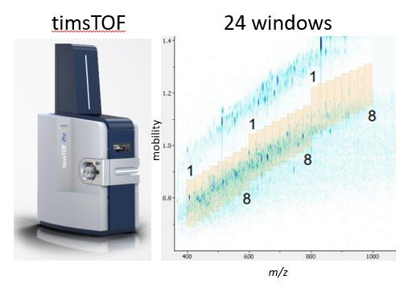Initially, you will set all the parameters in the Skyline session required to work with data-independent datasets and then you will proceed to extract the quantification information from the raw data files. You will import DDA search results to create a spectral library in order to generate peptide query parameters to analyze the DIA data.
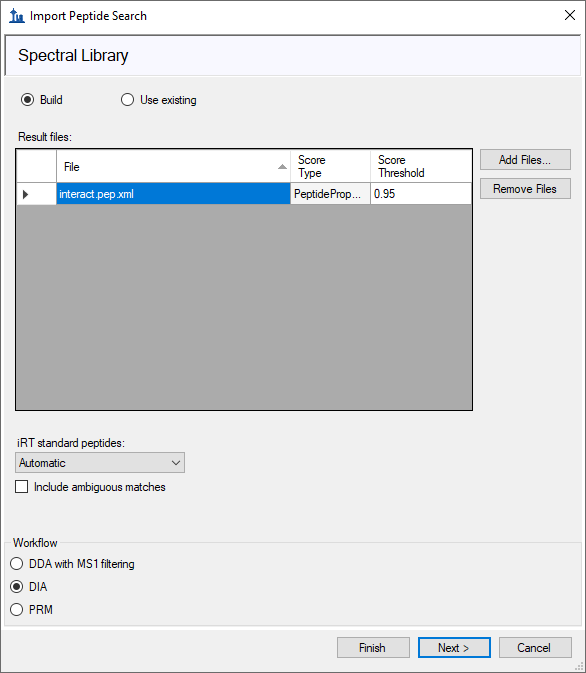
[figure adapted from Navarro, P. et al. A multicenter study benchmarks software tools for label-free proteome quantification. Nature Biotech 34, 1130–1136 (2016)]
There are two dataset options for this tutorial. The “full” dataset is ~19Gb. The “small” dataset is a 4-minute window extracted from the full dataset (~5Gb). The tutorial should run considerably faster on it, and it is also more likely to run on a laptop. The screenshots will be from the small dataset; because the results shown here are from a short 4-minute window, they look a bit sparse. The results from the full dataset are much better. To start this tutorial, download one of the following datasets:
https://skyline.ms/tutorials/DIA-PASEF-small.zip
https://skyline.ms/tutorials/DIA-PASEF-full.zip
Extract the files in it to a folder on your computer, like:
C:\Users\brendanx\Documents
This will create a new folder (corresponding to the ZIP file name) like:
C:\Users\brendanx\Documents\DIA-PASEF-small
If you have been using Skyline prior to starting this tutorial, it’s a good idea to revert Skyline to its default settings. To do so:
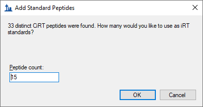
The settings in your current instance of Skyline have now been reset to the default.
Since this tutorial covers a proteomics topic, ensure that the user interface is set to the “Proteomics interface”
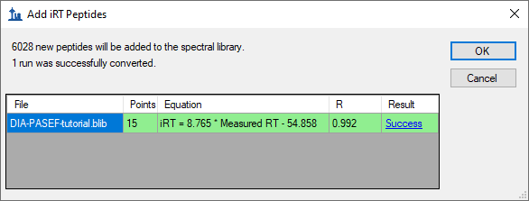
Skyline is operating in Proteomics mode which is displayed by the protein icon in the upper right-hand corner of
Skyline.
For DIA analysis, you will want to force Skyline to integrate peak areas for all extracted quantitative transitions. To do that:
If you know where to look, you could perform all of the following steps through various menu options on Skyline. To simplify the normal workflow for DIA, you will instead use a “wizard” which will step you through the critical choices required for Skyline to run the analysis. You will start with building a spectral library from DDA peptide spectrum match results, followed by specifying a set of DIA runs to extract chromatograms from, and then specifying various settings, and finally the targets themselves, which you are interested in querying.
You will build the library from the analysis of one DDA run each of the A and B samples. The DDA search has already been performed using the MSFragger search engine and post processed using PeptideProphet – see this link for more DDA search engines supported by Skyline https://skyline.ms/wiki/home/software/Skyline/page.view?name=building_spectral_libraries. You will start from the interact.pep.xml file which is the output of PeptideProphet and contains the database search results from both DDA files.
To get started do the following:
Skyline tells you that you need to save the current document so that it will know where you want to perform the analysis on your computer disk drive.
The Import Peptide Search wizard should appear looking like this:
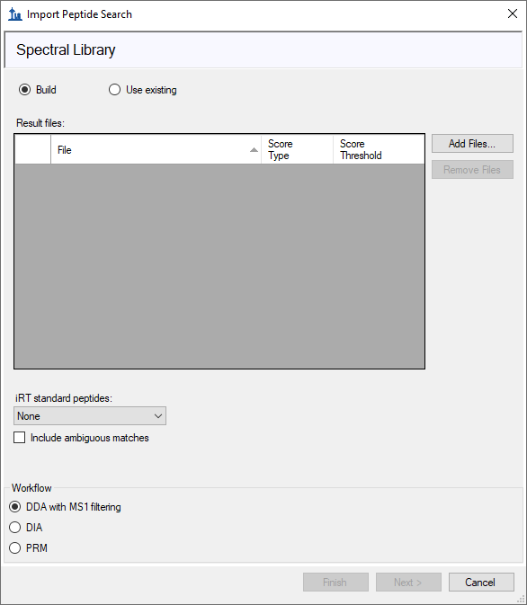
The Spectral Library page of the wizard should now look like this:

Note: 0.95 is the threshold applied to the PeptideProphet probability computed for every peptide spectrum match in the DDA database search – in this particular data set this corresponds to a PSM false discovery rate of 0.2% but this will differ among data sets so a score threshold to achieve the FDR you want to use should be entered here.
Skyline should begin building the library, showing progress in a form titled Build Peptide Search Library. When the library build is complete, Skyline will attempt to find peptides consistently present in all runs to use as iRT landmark peptides. It will show a form asking how many of these peptides to use for adjusting RTs for other peptides:
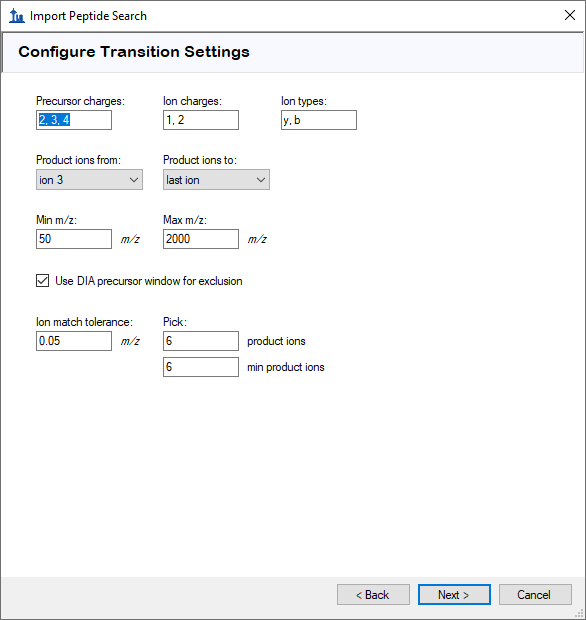
Skyline will then present a summary form like the one below:
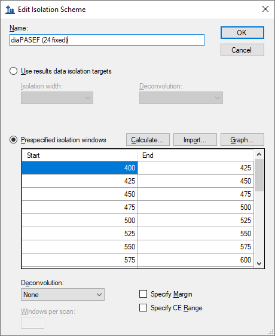
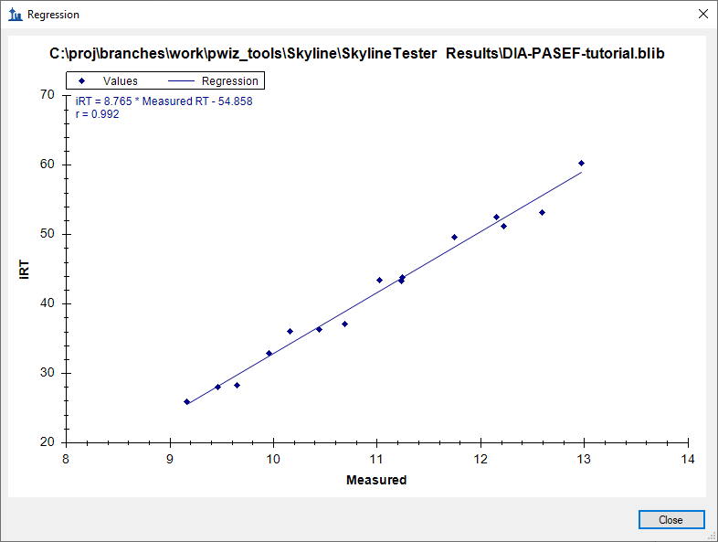
Skyline will ask if you want to recalibrate the iRT standard values onto the regression line calculated and shown in the graph above.
Skyline presents a long list of peptides with ambiguous matches. In other words, the only evidence for these peptides came from spectra which were matched to multiple peptides, making those spectra and matching peptides not ideal for subsequent targeted analysis.
You are presented the Extract Chromatograms page which allows you to tell Skyline where to find the DIA data files it will use for chromatogram extraction, peak detection and peak area calculation.
The Browse for Results Files should look like this:
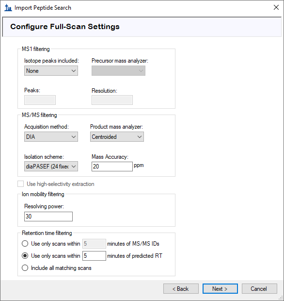
The Import Peptide Search form should look like this:
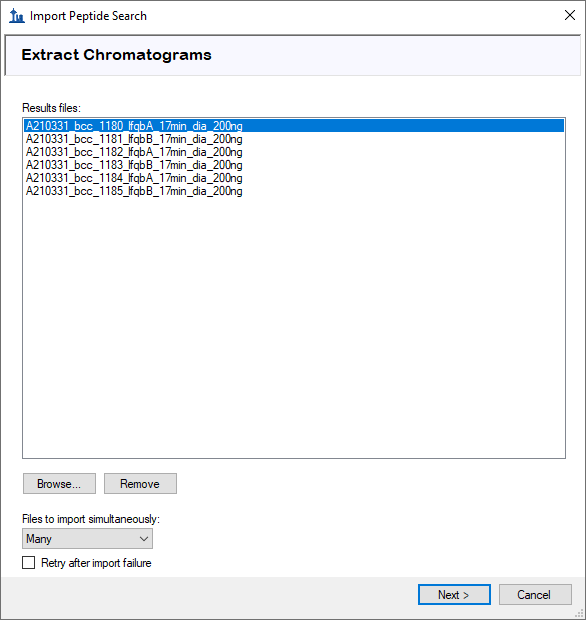
Skyline presents a form asking if you want to remove the common prefix and suffix which makes the replicate names shown in the Skyline interface shorter and generally easier to work with.
In the Configure Transition Settings page, make the following changes from the default values:
|
NOTE: You could leave the ion type “p” which stands for precursor, and Skyline would extract chromatograms covering the precursor isotope distribution from the MS1 spectra in the DIA data files. However, to simplify this tutorial and reduce processing time and output file size, the description below deals only with fragment ion chromatograms extracted from the DIA MS/MS spectra. |
The Import Peptide Search form should look like:
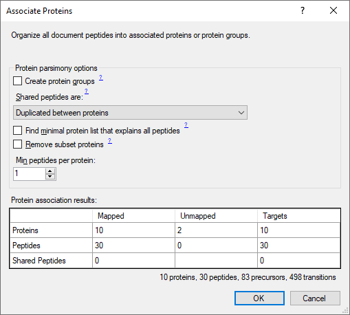
Skyline presents the Configure Full-Scan Settings page.
Note: These extraction settings depend on the type and settings of the instrument used for data acquisition. The optimal extraction settings may be slightly different for each dataset. PASEF data is always centroided so you should select ‘Centroided’ and specify a ‘20’ ppm mass accuracy for extraction.
Make the following changes to the default values:
Now you need to define a new isolation scheme according to the parameters defined on the instrument for data-independent acquisition.
Note: In this example, we used 24 fixed width (25 m/z) windows that covered the range from 400 to 1000 m/z.
This brings up the Edit Isolation Scheme form in which you should do the following.
The Edit Isolation Scheme form should now look like this:

Skyline has worked out the Start and End m/z values for the DIA isolation ranges measured on the mass spectrometer.
To visualize the isolation scheme:
You will see a form like the one below:

You can click-and-drag a rectangle to zoom in or use the mouse scroll-wheel. There is no red for Show gaps or yellow for Show single cycle overlaps, which are both errors in DIA isolation scheme design.
The Import Peptide Search wizard should now look like this:

You will see the Import FASTA page, where you should do the following:
|
NOTE: At this point, you could choose to perform a proteome-wide analysis by instead navigating to the DDA_search subfolder where you found the “interact.pep.xml” file and double-clicking the full FASTA sequence file “napedro_3mixed_human_yeast_ecoli_20140403_iRT_reverse.fasta” that was used in the peptide search. This would produce quite a lot more targets and take more time to process, but is still feasible on most modern laptops. |
The Import Peptide Search wizard should now look like this:
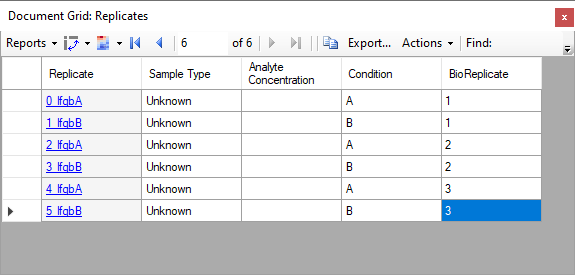
You should be presented with a form describing the targets calculated based on your settings and the FASTA sequence text provided that looks like this:
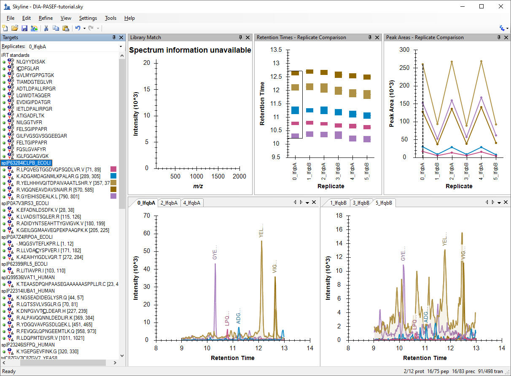
Notice that with a Min peptides per protein filter of “1” the 12 proteins found in the FASTA file produce 10 “Mapped” proteins. This is because 2 “Unmapped” proteins have no peptides found in the spectral library.
|
Note: The final document will include an “iRT standards” peptide list, for the iRT peptides, and a “Decoys” peptide list, for the decoys you have specified. This will also add 15 iRT peptides and 30 decoy peptides. In the form above, the precursors and transitions count reflect these additions while the proteins and peptides counts do not. |
Skyline begins extracting chromatograms which should look like this on a standard i7 4-core processor:
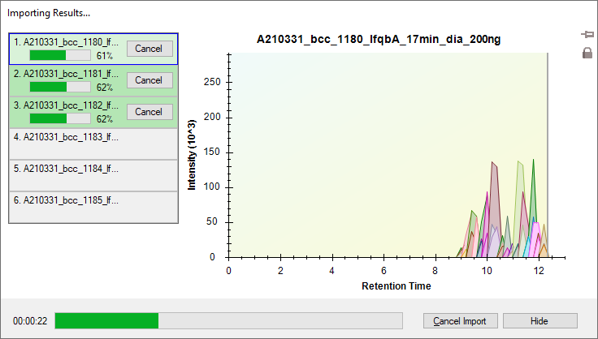
With 6-cores and above all files will be processed in parallel, and on most laptops with 2-cores the import will process 2 files at a time.
After the import is completed, Skyline will show you the mProphet model you requested on the Import FASTA page of the Import Peptide Search wizard. It should look like this:
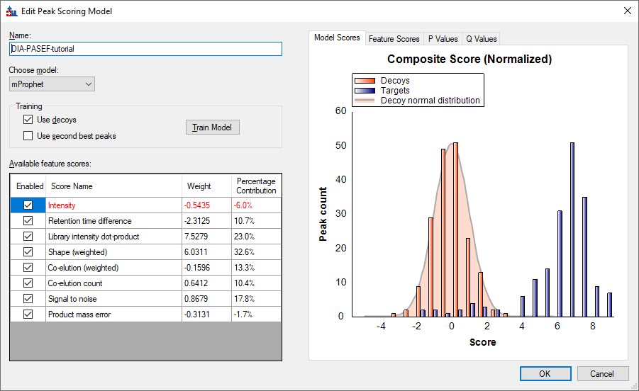
It has already been used to re-score the 10 best peaks Skyline found in each set of chromatograms, using its default score, and re-choose the peaks to be the ones with the best mProphet scores. These mProphet scores (given the name Detection Z Score in Skyline) are scaled such that 1.0 is 1 standard deviation from the mean mProphet score for the distribution of similar best peaks for the sequence shuffled decoy peptides you requested. Each has also been assigned a q value (given the name Detection Q Value in Skyline).
Next you need to define which samples belong to which experimental group:
In this experiment there are two conditions: Condition A are samples that have a proteome composition of E.coli 20%, yeast 15% and human 65%, and condition B have a composition of E.coli 5%, yeast 30% and human 65%.
The Define Annotation window should like this:
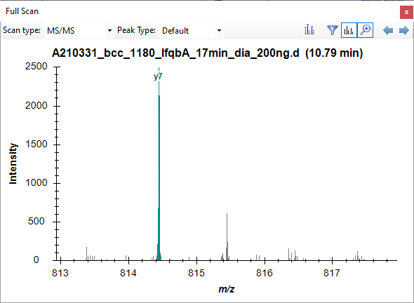
This will return you to the Document Settings window.
You are now ready to annotate the replicates you have imported:
This brings up the Document Grid window, which will show the Proteins report if you have never used it before:
Annotate the samples as shown in the screen capture below using keyboard keys for A, B, 1, 2, 3, Enter and arrow keys to navigate:
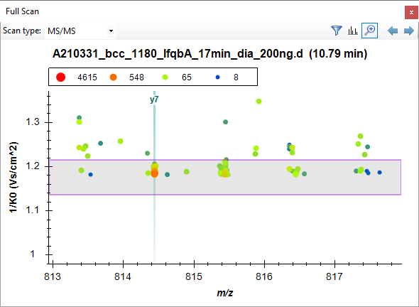
For easy viewing you can now split the data by condition into 2 panes in the Skyline window.
Note: If the data is still importing at this stage you will need to wait until this is finished to save the document.
Next you will manually inspect some of the chromatography and underlying spectra. To do that, you will want the Retention Times and Peak Areas views are showing:
Now both views should be visible. You can configure them optimally on the screen by doing the following:
You can perform the same operations shown below with the Library Match window.
Note: In order to dock a window like this, the mouse arrow cursor must be placed inside one of the docking icons, in this case, at the top. Once you begin dragging with the left-mouse button held down, Skyline will show the docking icons and a transparent blue rectangle where the window will be placed if you were to release the left-mouse button at that moment.
 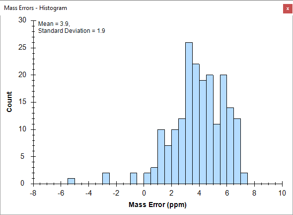
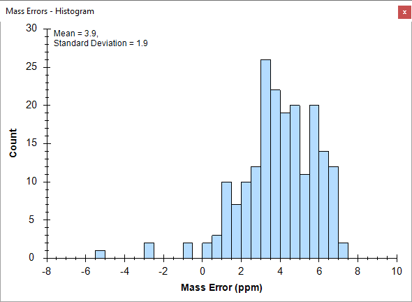
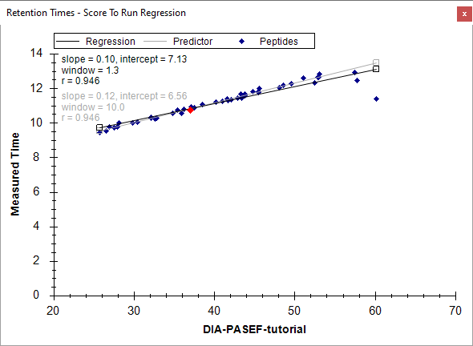
You should see all of the peptides for this protein shown on the various plots (chromatogram, peak areas, and retention time replicate graphs). The screenshot above is an example of when one protein is selected and all of the peptides for this protein are summarized in each of these views (except library match window where nothing is shown).
Based on what you see in the Peak Area - Replicate Comparison plot, does this protein appear to be differentially regulated? Recall that the expected fold-change ratio between A:B is 4:1 for E. coli.
You get specific information for this peptide in all of the views, as shown below:
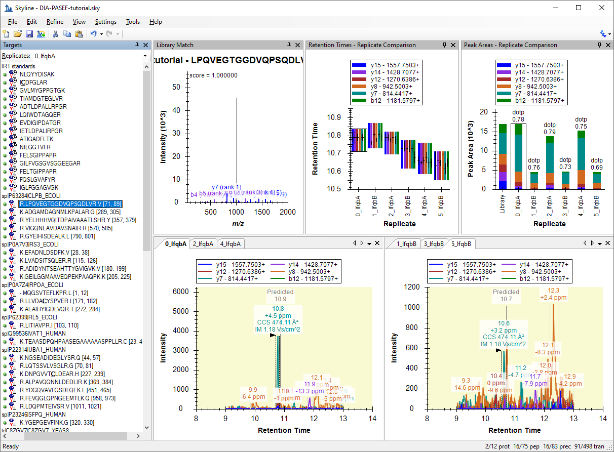
Examine the peak area patterns for the rest of the peptides belonging to this protein. Is the quantitative pattern for the peptides from this protein consistent with the expected differential regulation pattern (4:1)?
NOTE: If there is more than one precursor charge state for a given peptide sequence these are extracted and scored separately. You can look at these by clicking the + next to the peptide sequence and clicking on the individual charge states.
Examine the replicate peak areas from the protein level view and the peptide level view. Are the peak areas consistent with the expected ratio (1:1)? What about the yeast proteins (1:2)?
Notice that if you hover the cursor over a chromatogram curve a circle appears on the curve with the same color as the curve.
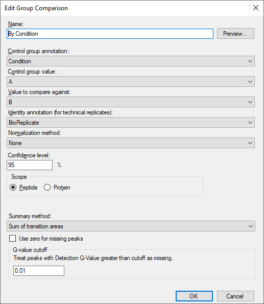
Skyline will open the Full-Scan view on the spectrum from which the chromatogram point was extracted zoomed on the ion that you selected.
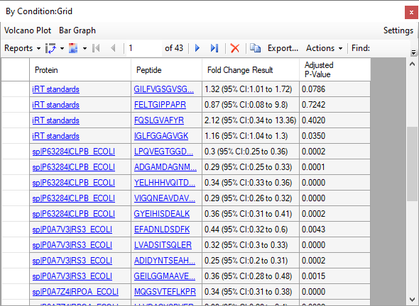
Skyline will show the zoomed MS/MS spectrum with the mobility dimension on the y-axis:

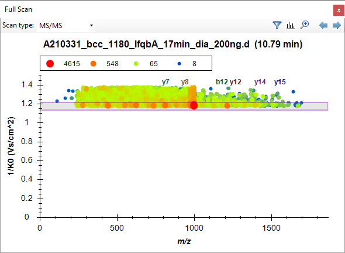
Explore the data further manually (including some decoys).
You can examine the mass accuracy and retention time prediction accuracy to determine whether the optimal extraction parameters have been used or whether some adjustment may improve the results.
This will show the distribution of mass errors over the data set. Could the extraction window (±20 ppm) have been further optimized? Generally, the mean error +/- 3 standard deviations is sufficient. If the histogram appears cut off, however, with high counts at the extremes then you may want to widen your extraction windows.

Note that the distribution appears to have two peaks, one around 3 and one around 6. To understand this better, it helps to know that these are the mass error values across all 6 runs.
You will see that the mean value ranges from 3.4 to 4.1, while the standard deviation value ranges from 1.8 to 3.4. Using the simple calculation Mean + 3 * SD = 4.1 + 3 * 3.4 = 14.3 PPM at the most extreme, this seems to indicate that a 20 PPM tolerance is a pretty good approximation of what these data require.
To view the mass errors for the decoys also:
To the see the linear regression used to predict the target peptide retention times based on the iRT peptides and library iRT values from the target peptides:
This will show the deviations from the predicted retention times in this data set. Could the extraction window (± 5 minutes) have been further optimized for this analysis? Check the decoys as well.

Note: As the spectral library for this analysis was constructed from a side-by-side analysis of the same samples. As such, the accuracy of the retention time predictions are very good. Retention times from external spectral libraries acquired on different instruments, at different times, from different samples would lead to larger errors in these predictions.
You have performed some general validation that the data processing with Skyline has no serious flaws. All available features scores were included in the mProphet scoring model, and the model achieved reasonable separation between the targets and the decoys, which are used to simulate random undetectable targets. You may feel that the RT extraction range could be tightened from +/- 5 to 3. But, these settings will clearly work and the resulting mProphet model looks acceptable.
This type of analysis of even hundreds of peptides generally makes manual analysis of every single target time consuming and even error prone itself. The current analysis could be extended to the entire 3-organisms FASTA file, known as proteome-wide analysis, which would include tens of thousands of peptides. Rather than consider each individually, researchers more typically perform some type of grouped comparison and then follow up on peptides or proteins which appear to be changing in interesting ways.
To perform a simple pairwise group comparison inside Skyline do the following:
The Edit Group Comparison form should look like this.

To see the group comparison you have just created:
A table should appear that shows the peptide level fold-change and adjusted p-value (an estimate of false discovery rate - FDR) for the comparison between the A and B sample mixtures.
Inspect the fold changes estimated for some of the peptides in the table keeping in mind which species they are from and the expected ratios (human 1:1, yeast 1:2, E. coli 4:1). Consider the adjusted p values and what you might expect of them.
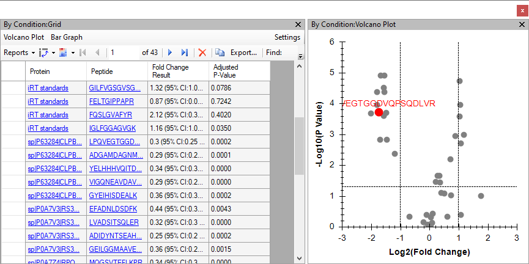
You can already see clusters of points around the expected ratios and above the 5% FDR horizontal line for most of the changing peptides. To get a better understanding of which points belong to which organism perform the following actions:
The form should show you the list of peptides with matching protein names like this:
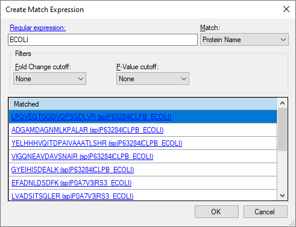
Which should leave the Volcano Plot Formatting form looking like this:
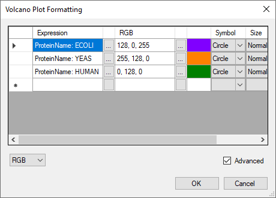
Which should leave the volcano plot looking like this:
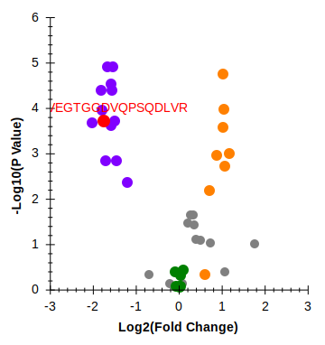
Notice that there are still some gray dots. You can click on any of the dots to cause them to be selected in the Targets view and have their display test shown on the graph in red. You can also hover the mouse cursor over any point to get more information on it. In this way you can see that the gray dots belong to the iRT standard peptides. You can filter them from the grid and the plot at the same time by doing the following:
This will remove the gray dots in the volcano plot. You might try limiting this plot to just one species using a different type of filter on the protein names.
Skyline also provides a bar plot view on the fold-change values which incorporates error bars for the (unadjusted) confidence intervals. Though, they are unadjusted for the multiple hypotheses tested, they still give you some insight into the variance in the measurements. Do the following to review the fold-change values in the bar plot:
The Bar Graph will appear on top of the Volcano Plot. To give it more space for viewing do the following:
The graph should now look like this:
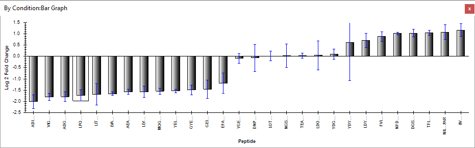
As with the volcano plot, you can click on the individual bars to select them in the Targets view (so that you can confirm which species various peptides in the graph are from).
To view the fold-change results at the protein-level for the 11 targeted proteins (excluding iRT standards and decoys), do the following:
Skyline should adjust the Bar Graph and Volcano Plot immediately. You will see in the Bar Graph that there are just 9 bars and not the 10 you might have been expecting. This is because the current settings give Skyline no way to deal with missing values (due to 0.01 q value cut-off) other than dropping targets without consistent enough measurement to support a T-test. To fix this, do the following:
The Bar Graph should now show fold-change estimates for all 10 proteins that looks like this:
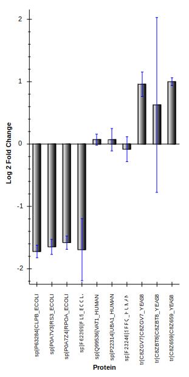
You may also want to consider using a more sophisticated statistical tool like MSstats for your comparisons. To do this, you can install MSstats from the Skyline Tool Store (using Tools > Store in the Skyline menus or by clicking the Tool Store button on the Skyline installation web page). Then you can either run MSstats directly from the Skyline Tools menu or do the following to prepare to run MSstats in R or RStudio later:
Congratulations! You have completed your first differential proteomics comparison using Skyline with diaPASEF data. You have learned how to use the Import Peptide Search wizard to streamline the initial data processing from building a spectral library out of ddaPASEF peptide search data to chromatogram extraction from quantitative diaPASEF runs with IMS filtering, creating and applying an mProphet statistical peak detection model to improve peak selection and assign q values which can be used to control the false discovery rate among the peak areas you used in your group comparison. You learned to first assess the DIA data quality with the mass error and retention time regression plots. And finally, you learned to perform a simple pairwise comparison between two groups of samples directly within Skyline, which gave you the interactive group comparison grid, volcano plot and bar graph to help you understand and interact with the results. Having exported the MSstats Input report, you could now use the MSstats external tool to perform further statistical tests.
Now consider retrying these steps with the proteome-wide FASTA file, the DIA-PASEF-full dataset, and/or including precursor ions to see how this works with a broader target set and/or another dimension (precursor ions in MS1 spectra). Or move on to trying this with your own data.